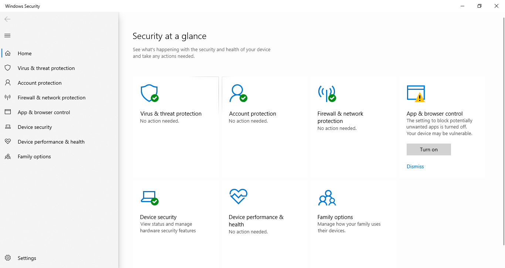
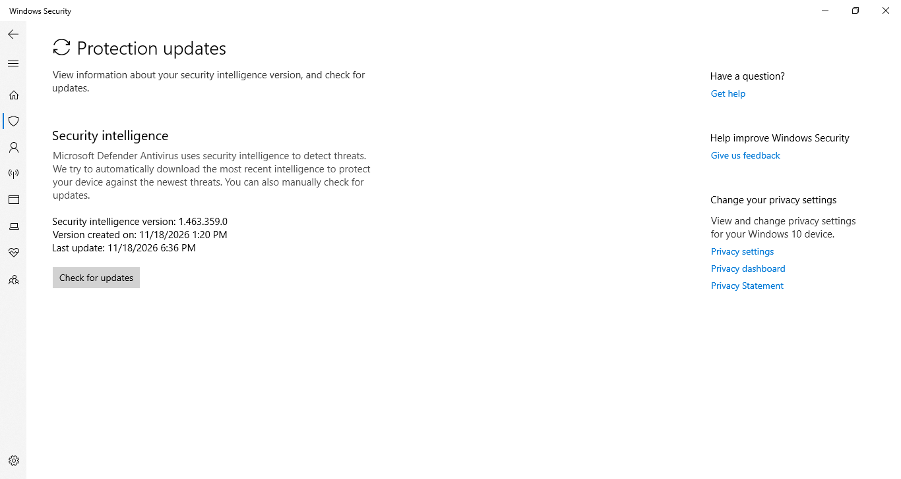

بررسی امنیت سیستم و تهیه چکلیست امنیتی
System Security Check — ارزیابی وضعیت Firewall، Windows Security و بهروز بودن ویندوز و تدوین چکلیست امنیتی
01 / هدف مأموریت
هدف این پروژه، ارزیابی وضعیت امنیتی پایه یک سیستم ویندوزی و تهیه یک چکلیست امنیتی قابل استفاده است. در این بررسی سه محور اصلی کنترل میشود: فعال بودن و تنظیمات دیوار آتش (Firewall)، وضعیت محافظتهای Windows Security شامل آنتیویروس و بروزرسانی تعاریف تهدید، و بهروز بودن خود ویندوز. نتیجه این بررسی نشان میدهد سیستم در برابر تهدیدهای رایج تا چه حد محافظت شده و چه اقدامهای اصلاحی لازم است.
02 / ابزارها و محیط اجرا
Windows Security: مرکز امنیتی ویندوز برای مشاهده وضعیت آنتیویروس (Microsoft Defender)، فایروال، کنترل برنامه و مرورگر و امنیت دستگاه.
Windows Defender Firewall: مدیریت قوانین ورودی و خروجی شبکه برای پروفایلهای Domain، Private و Public.
Windows Update: بخش تنظیمات برای بررسی و نصب بهروزرسانیهای ویندوز و مشاهده تاریخچه آنها.
ابزارهای کمکی: دستور winver برای نمایش نسخه ویندوز و CMD / PowerShell برای تأیید وضعیت از طریق خط فرمان.
محیط اجرا: ویندوز ۱۰ یا ۱۱ با دسترسی کاربر عادی؛ برای برخی دستورهای خط فرمان اجرای ابزار با Run as administrator ممکن است لازم باشد.
03 / مراحل انجام کار
- باز کردن Windows Security: از منوی Start عبارت Windows Security را جستجو و باز میکنیم. صفحه اصلی وضعیت کلی بخشها را با آیکن سبز (سالم) یا زرد/قرمز (نیازمند اقدام) نشان میدهد.
- بررسی Virus & threat protection: وارد این بخش میشویم و فعال بودن Real-time protection، زمان آخرین اسکن و نسخه تعاریف تهدید (Security intelligence) را بررسی میکنیم. با گزینه Check for updates تعاریف را بهروز میکنیم و در صورت نیاز Quick scan اجرا میکنیم.
- بررسی Firewall & network protection: وضعیت سه پروفایل Domain، Private و Public را بررسی میکنیم و مطمئن میشویم هر سه روشن (On) هستند. برای جزئیات بیشتر، wf.msc را اجرا میکنیم تا قوانین Inbound و Outbound دیده شود.
- بررسی سایر بخشها: وضعیت App & browser control (SmartScreen)، Device security (مانند Secure Boot و TPM در صورت پشتیبانی) و Account protection را مشاهده و یادداشت میکنیم.
- بررسی Windows Update: مسیر Settings → Windows Update را باز میکنیم، گزینه Check for updates را میزنیم و سپس در Update history آخرین بهروزرسانیهای نصبشده را مرور میکنیم.
- ثبت نسخه ویندوز: با Win + R و اجرای winver نسخه و شماره Build ویندوز را ثبت میکنیم.
- تأیید با خط فرمان (اختیاری): وضعیت فایروال و آنتیویروس را با دستورهای زیر دوباره بررسی میکنیم.
- تدوین چکلیست: نتیجه هر مورد را در چکلیست بخش بعد ثبت میکنیم و برای موارد ناموفق اقدام اصلاحی مینویسیم.
04 / یافتهها و تحلیل فنی
| مورد بررسی | محل بررسی | وضعیت مشاهدهشده |
|---|---|---|
| Real-time protection | Virus & threat protection | فعال |
| تعاریف تهدید (Security intelligence) | Protection updates | بهروز |
| Firewall پروفایل Domain / Private / Public | Firewall & network protection | هر سه روشن |
| SmartScreen | App & browser control | فعال |
| Windows Update | Settings → Windows Update | بهروز (You're up to date) |
| نسخه و Build ویندوز | winver | Windows 10 |
- فعال بودن Real-time protection مهمترین لایه دفاعی در برابر بدافزار است، اما فقط وقتی مؤثر است که تعاریف تهدید بهروز باشد.
- فایروال باید روی هر سه پروفایل روشن باشد؛ خاموش بودن پروفایل Public در شبکههای عمومی (کافه، فرودگاه) خطر بیشتری ایجاد میکند.
- بهروزرسانیهای ویندوز علاوه بر قابلیتهای جدید، آسیبپذیریهای امنیتی شناختهشده را برطرف میکنند؛ تأخیر طولانی در نصب آنها سطح حمله را بالا میبرد.
- اگر آنتیویروس شخص ثالث نصب باشد، ویندوز ممکن است Microsoft Defender را غیرفعال نشان دهد؛ در این حالت باید وضعیت همان آنتیویروس بررسی شود.
- Windows Security فقط وضعیت پایه را نشان میدهد و جایگزین رفتارهای امنیتی کاربر (رمز قوی، احتیاط در دانلود و ایمیل) نیست.
چکلیست امنیتی
| انجام | مورد چکلیست | اقدام در صورت ناموفق بودن |
|---|---|---|
| ☑ | Real-time protection روشن است | فعالسازی از Virus & threat protection settings |
| ☑ | تعاریف تهدید بهروز است | زدن Check for updates در Protection updates |
| ☑ | اسکن اخیر انجام شده است | اجرای Quick scan و در صورت لزوم Full scan |
| ☑ | Firewall روی Domain / Private / Public روشن است | روشن کردن پروفایل خاموش در Firewall & network protection |
| ☑ | SmartScreen فعال است | فعالسازی در App & browser control |
| ☑ | ویندوز بهروز است و بهروزرسانی معلق ندارد | نصب بهروزرسانیها و ریاستارت سیستم |
| ☑ | نسخه ویندوز هنوز پشتیبانی میشود | ارتقا به نسخه پشتیبانیشده |
| ☑ | حساب کاربری رمز قوی یا PIN / Windows Hello دارد | تنظیم رمز یا PIN در Settings → Accounts → Sign-in options |
| ☑ | از دادههای مهم نسخه پشتیبان وجود دارد | استفاده از File History یا کپی دستی روی حافظه خارجی |
05 / مستندات تصویری




06 / جمعبندی و آموختهها
در این پروژه یاد گرفتیم که امنیت پایه ویندوز بر سه ستون استوار است: آنتیویروس فعال با تعاریف بهروز، فایروال روشن روی همه پروفایلها و نصب منظم بهروزرسانیهای ویندوز. Windows Security یک نمای یکجا از این موارد میدهد و با چند کلیک میتوان وضعیت سیستم را سنجید و مشکلات را برطرف کرد.
همچنین دیدیم که یک چکلیست مکتوب کار بررسی امنیتی را تکرارپذیر میکند؛ میتوان آن را بهصورت دورهای (مثلاً ماهانه) یا هنگام تحویل یک سیستم به کاربر اجرا کرد. این مهارت در نقش پشتیبان IT برای ارزیابی سریع سیستمها کاربرد مستقیم دارد.